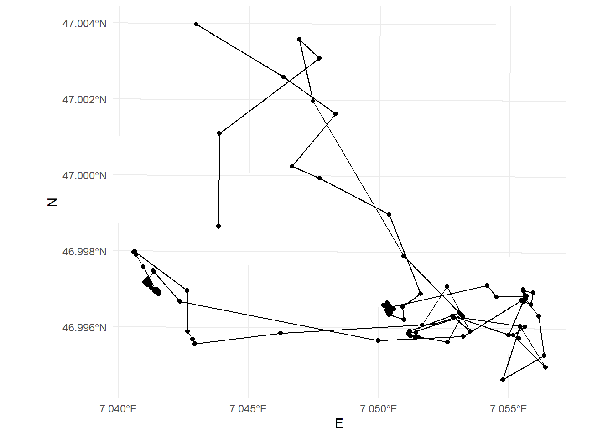
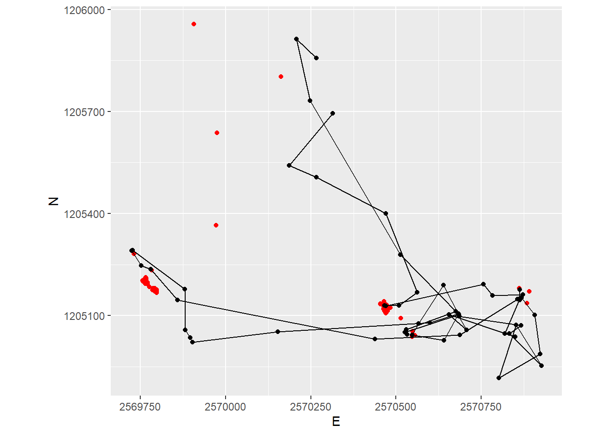
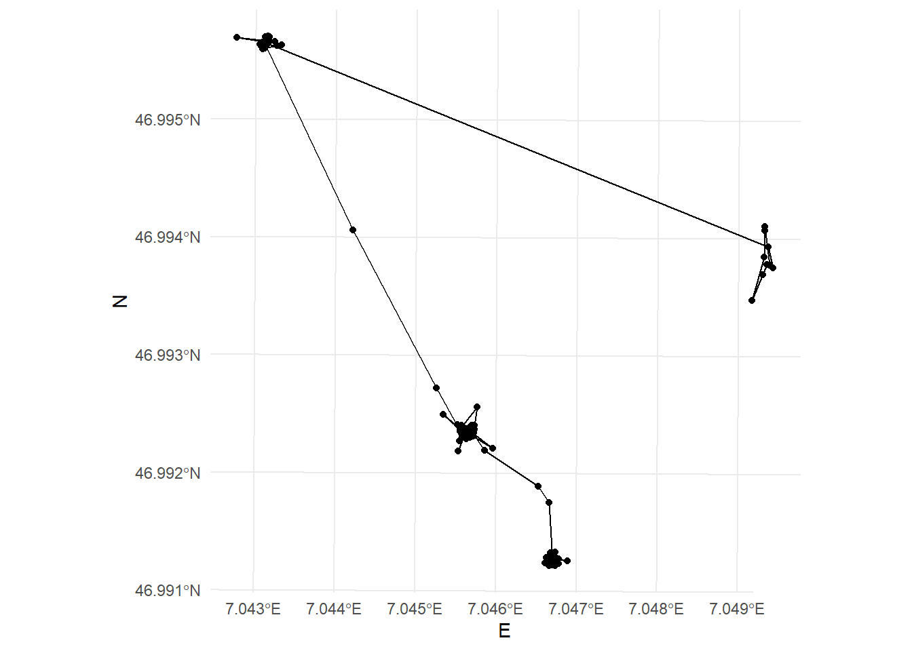
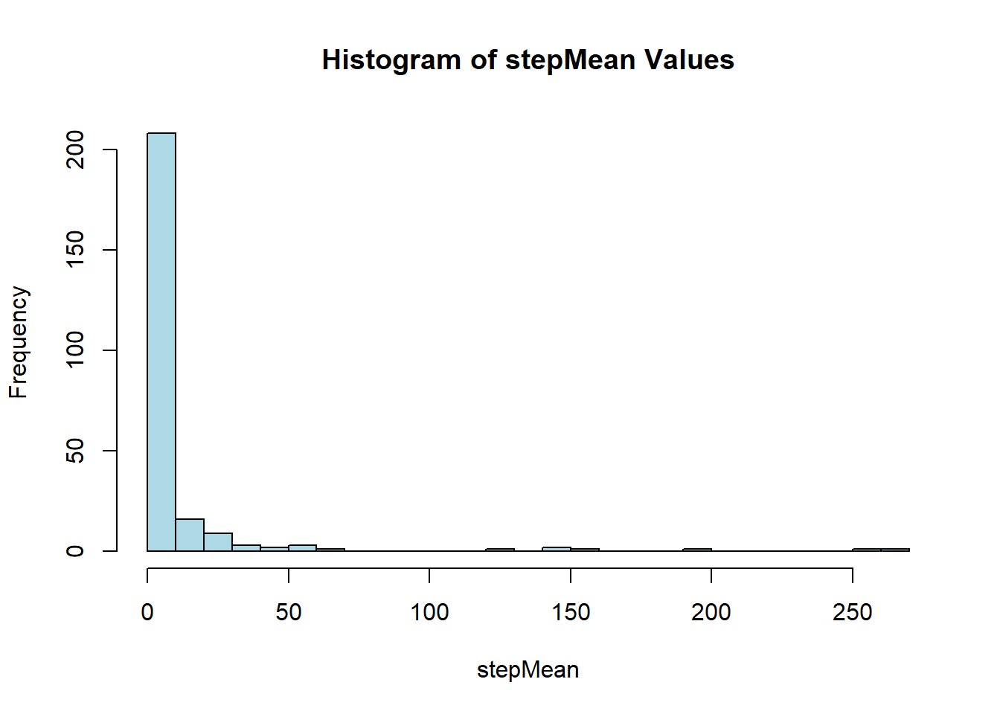
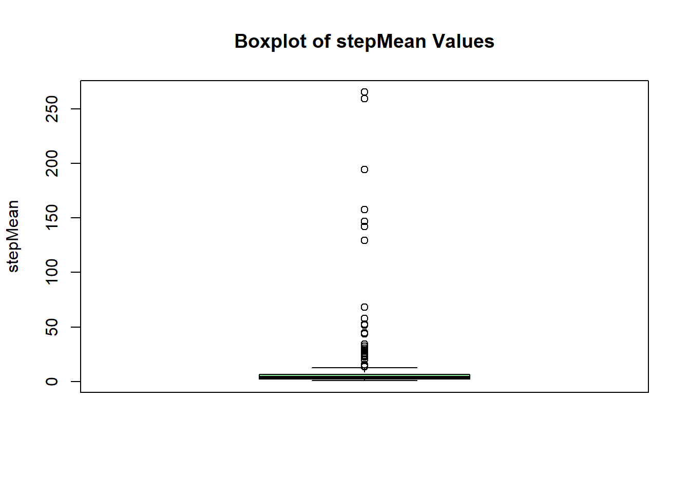
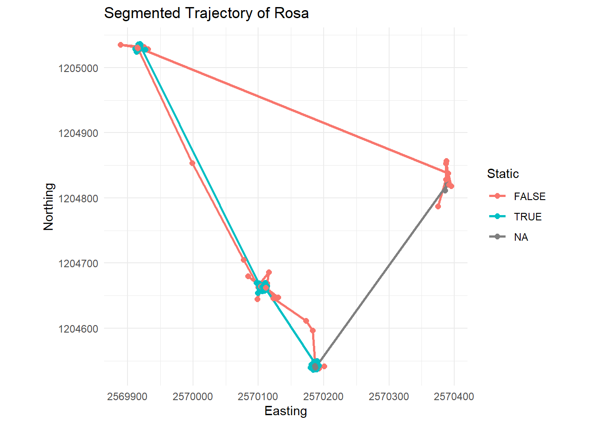
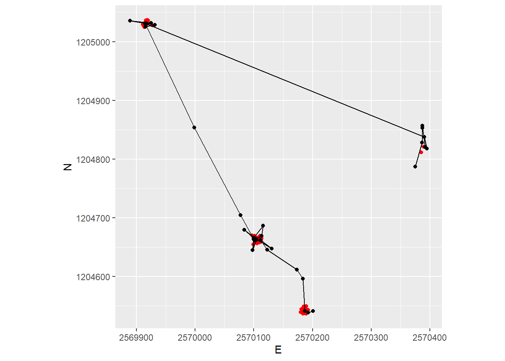
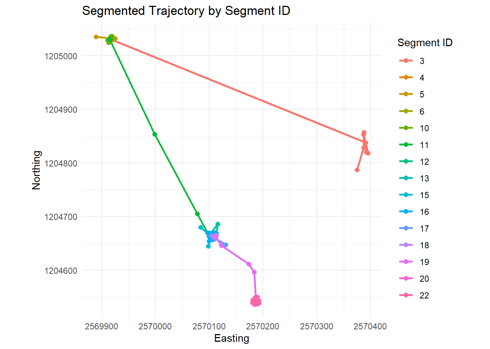

WEEK 4 EXERCISES
1 Input: Segmentation
1.1 Step a): Specify a temporal wondow
Simple feature collection with 192 features and 11 fields
Geometry type: POINT
Dimension: XY
Bounding box: xmin: 2569724 ymin: 1204916 xmax: 2570927 ymax: 1205957
Projected CRS: CH1903+ / LV95
# A tibble: 192 × 12
TierID TierName CollarID DatetimeUTC E N
<chr> <chr> <dbl> <dttm> <dbl> <dbl>
1 002A Sabi 12275 2015-06-30 22:00:13 2569972. 1205366.
2 002A Sabi 12275 2015-06-30 22:16:06 2569975. 1205637.
3 002A Sabi 12275 2015-06-30 22:30:19 2570266. 1205857.
4 002A Sabi 12275 2015-06-30 22:45:13 2570208. 1205913.
5 002A Sabi 12275 2015-06-30 23:00:10 2570247. 1205731.
6 002A Sabi 12275 2015-06-30 23:15:17 2570512. 1205279.
7 002A Sabi 12275 2015-06-30 23:30:38 2570684. 1205103.
8 002A Sabi 12275 2015-06-30 23:45:16 2570526. 1205051.
9 002A Sabi 12275 2015-07-01 00:00:10 2570532. 1205044.
10 002A Sabi 12275 2015-07-01 00:15:14 2570530. 1205059.
# ℹ 182 more rows
# ℹ 6 more variables: geometry <POINT [m]>, dist_n_minus_2 <dbl>,
# dist_n_minus_1 <dbl>, dist_n_plus_1 <dbl>, dist_n_plus_2 <dbl>,
# stepMean <dbl>1.2 Step c): Remove “static points”
We can now determine if an animal is moving or not by specifying a threshold distance on stepMean. In our example, we use the mean value as a threshold: Positions with distances below this value are considered static.

2 Exercise A: Segmentation
With the skills from Input: Segmentation you can now implement the segmentation algorithm described in Laube and Purves (2011) to either your own movement data or to a different wild boar using different sampling intervals.
2.1 Task 1: Calculate distances
Now, you can Step a): Specify a temporal window v and Step b): Measure the distance to every point within v, which you had used with sabi, on your own movement data or to a different wild boar using different sampling intervals.
[1] "Sabi" "Rosa" "Ruth"# A tibble: 1 × 2
TierID start_time
<chr> <dttm>
1 016A 2014-11-07 07:45:44
Simple feature collection with 253 features and 12 fields
Geometry type: POINT
Dimension: XY
Bounding box: xmin: 2569889 ymin: 1204537 xmax: 2570395 ymax: 1205037
Projected CRS: CH1903+ / LV95
# A tibble: 253 × 13
TierID TierName CollarID DatetimeUTC E N timelag
<chr> <chr> <dbl> <dttm> <dbl> <dbl> <dbl>
1 016A Rosa 13972 2014-11-07 07:45:44 2570385. 1204812. 866
2 016A Rosa 13972 2014-11-07 08:00:10 2570389. 1204821. 908
3 016A Rosa 13972 2014-11-07 08:15:18 2570375. 1204787. 905
4 016A Rosa 13972 2014-11-07 08:30:23 2570387. 1204828. 945
5 016A Rosa 13972 2014-11-07 08:46:08 2570387. 1204853. 843
6 016A Rosa 13972 2014-11-07 09:00:11 2570387. 1204857. 904
7 016A Rosa 13972 2014-11-07 09:15:15 2570392. 1204821. 896
8 016A Rosa 13972 2014-11-07 09:30:11 2570395. 1204818. 905
9 016A Rosa 13972 2014-11-07 09:45:16 2570391. 1204838. 928
10 016A Rosa 13972 2014-11-07 10:00:44 2569917. 1205031. 869
# ℹ 243 more rows
# ℹ 6 more variables: geometry <POINT [m]>, dist_n_minus_2 <dbl>,
# dist_n_minus_1 <dbl>, dist_n_plus_1 <dbl>, dist_n_plus_2 <dbl>,
# stepMean <dbl>2.2 Task 2: Specify and apply threshold d
After calculating the Euclidean distances to positions within the temporal window v in task 1, you can explore these values (we stored them in the column stepMean) using summary statistics (histograms, boxplot, summary()): This way we can define a reasonable threshold value to differentiate between stops and moves. There is no “correct” way of doing this, specifying a threshold always depends on data as well as the question that needs to be answered. In this exercise, use the mean of all stepMean values.
Store the new information (boolean to differentiate between stops (TRUE) and moves (FALSE)) in a new column named static.
Min. 1st Qu. Median Mean 3rd Qu. Max. NA's
0.7326 2.3506 3.5855 11.5894 6.6988 265.2851 4 

threshold = mean = 11.5
2.3 Task 3: Visualize segmented trajectories
Now visualize the segmented trajectory spatially. Just like last week, you can use ggplot with geom_path(), geom_point() and coord_equal(). Assign colour = static within aes() to distinguish between segments with “movement” and without.
Warning: Using `size` aesthetic for lines was deprecated in ggplot2 3.4.0.
ℹ Please use `linewidth` instead.

2.4 Task 4: Segment-based analysis
In applying Laube and Purves (2011), we’ve come as far as step b) in Figure 16.1. In order to complete the last steps (c and d), we need a unique ID for each segment that we can use as a grouping variable. The following function does just that (it assigns unique IDs based on the column static which you created in Task 2). You will learn about functions next week. For now, just copy the following code chunk into your script and run it.
